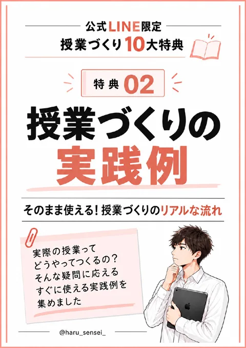
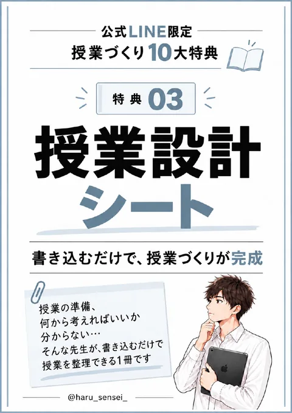
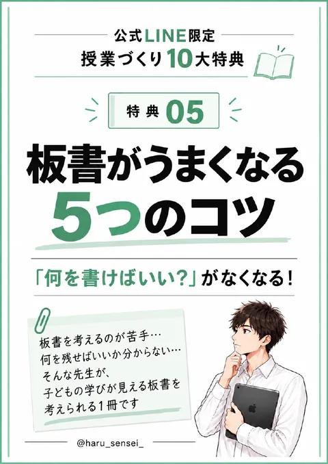
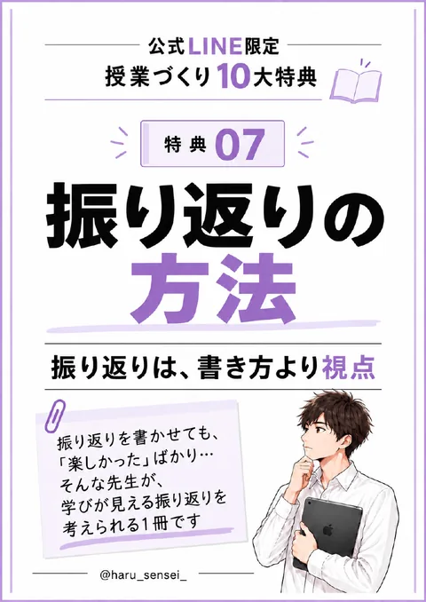
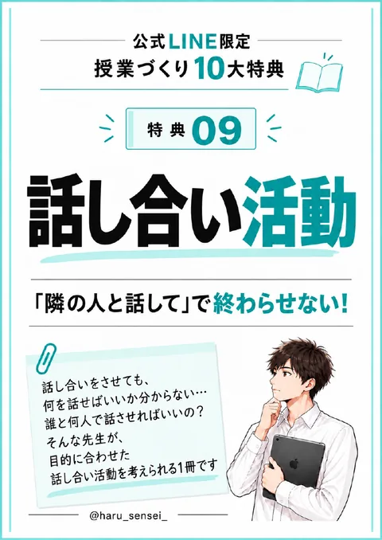

特典01
授業づくりの最短ルート
授業準備は、頑張り方より順番
授業準備、何から始めればいいか分からない…。そんな先生が、順番で考えられる1冊です。
うまく開けないときは… LINEアプリの中で表示している場合、画面のメニュー（「︙」や共有ボタン）から「ブラウザで開く」を選ぶと保存しやすくなります。
STEP 1
授業づくりの全体像をつかむ3冊
特典01
授業準備は、頑張り方より順番
授業準備、何から始めればいいか分からない…。そんな先生が、順番で考えられる1冊です。

特典02
そのまま使える！授業づくりのリアルな流れ
実際の授業ってどうやってつくるの？そんな疑問に応える、すぐに使える実践例を集めました。

特典03
書き込むだけで、授業づくりが完成
何から考えればいいか分からない…。そんな先生が、書き込むだけで授業を整理できるシートです。
STEP 2
導入・板書・発問など、気になる場面から
特典04
授業の最初、何をすればいい？
子どもの「知りたい！」「考えたい！」を引き出す、明日から使える導入アイデアをまとめました。

特典05
「何を書けばいい？」がなくなる！
何を残せばいいか分からない…。そんな先生が、子どもの学びが見える板書を考えられる1冊です。
特典06
子どもの「やりたい」を「必要な学び」につなげる
子どもと一緒に考えるって難しそう…。そんな先生が、子どもと学びの見通しをつくれる1冊です。

特典07
振り返りは、書き方より視点
振り返りを書かせても「楽しかった」ばかり…。そんな先生が、学びが見える振り返りを考えられる1冊です。
特典08
「何を聞けばいい？」がなくなる！
反応が返ってこない、いつも同じ問いかけになる…。そんな先生が、子どもの思考を引き出す発問を考えられる1冊です。

特典09
「隣の人と話して」で終わらせない！
何を話せばいいか、誰と何人で話させればいいか分からない…。そんな先生が、目的に合わせた話し合い活動を考えられる1冊です。
STEP 3
授業準備にAIを取り入れたい先生へ
特典10
「何を入力すればいい？」がなくなる！
ChatGPTを使いたいけど、何を入力すればいいか分からない…。そんな先生のために、授業づくりですぐ使える30のプロンプトをまとめました。